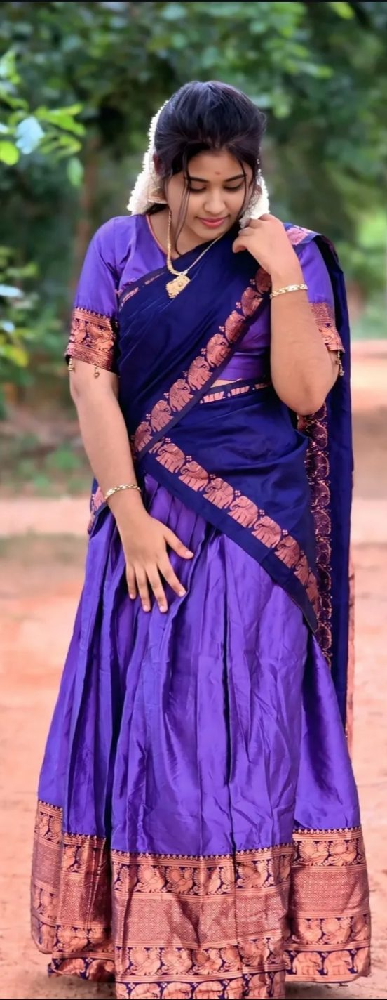

A Story Behind the Smile
Tap the poster to play
Ma,
No one in this world has ever been able to replace your place in my life, no one ever could, and no one ever will. I have never been able to even imagine anyone else in your place, nor could I ever do so.... The care you gave me, your affection, and the way you stood by me through every single situation — especially during my hardest times — accepting me and adjusting to everything without ever leaving my side; if you weren’t here, I wouldn't be who I am today. Whatever you taught me (made me learn and realise) is the only reason I am like this today; I think I’ve taken more scoldings from you than even from my mom.... You have done so much for me, you mean the world to me, and you are right at the top of my priority list.... Whatever I do, I never do anything without telling you or without your knowledge, and I never have — if anything was ever done otherwise, it was only a rare exception where the sensitivity of the situation demanded it. Whenever I want to share anything, you are always the very first person I turn to, and only after that comes anyone else... (you aren't just my friend first) you are way beyond that—(you aren't just close to my heart) you are extraordinarily close to my soul; you are my second soul, ma. Many times you have been like a second mother to me, and honestly (most of the times), you’ve filled in situations where I didn't have my mom, because I've shared and told you way more things than I ever shared with my own mother. You are the only person in my life who has ever truly seen my tears; I’ve never shown my tears to anyone else, nor spoken about them, and even in front of my own family members, I always hide my tears and never for anyone. You matter the most to my life, ma 🥹... Whatever you say is always accepted without a single regret, because you've always guided me right and made things right for me. I don't even know how else to express how special you are to me anymore—the words are just failing me, and I can't even type out paragraphs for it. If I tried to sit and think about everything you’ve done, it would take forever (literally, words wouldn't even be enough, because what you've done for me is just beyond words), and no amount of words could ever capture it.... I am ready to go to any extent for you (I mean it, I truly will).
Whenever you need anything, no matter what kind of help it is, or how massive it might be, just ask me — I will come, and I will do it for you. Just one call, and no matter where I am in this world, I will rush to your side and stand by you.
In any situation where you ever feel like you have no one (though that should never happen, and I pray it never does), don't even think twice, I will always be there for you — no matter how far away I am, I will be there for you, right until my very last breath. 🫶😇
Thank You for Being You
I don't measure our friendship by whether I'm always the first person you call or the person you spend the most time with. What we have doesn't need to compete to be meaningful.
I love that our friendship has room for other people too.
I never want our friendship to make you feel like you have to choose between me and the other people you love.
Your life is allowed to grow. Your heart is allowed to make room. And I'll never love you less because of it.
I want you to have people you can call, people you can laugh with, people who become important to you. I don't need to be everything.
So don't ever hesitate to tell me about someone new, or worry about how I'll react. I want to hear the stories. I want to know the people who are making your life happier too.
Because someone else becoming important to you doesn't erase what we've built. It doesn't take away our history, our conversations, or our memories. Our friendship is still ours.
Friendship was never supposed to make our worlds smaller. If it should give us somewhere safe to return to, while still giving each other the freedom to keep rising and growing.
Just the quiet security of knowing — "You are free to have a whole life, and I'm still here."
